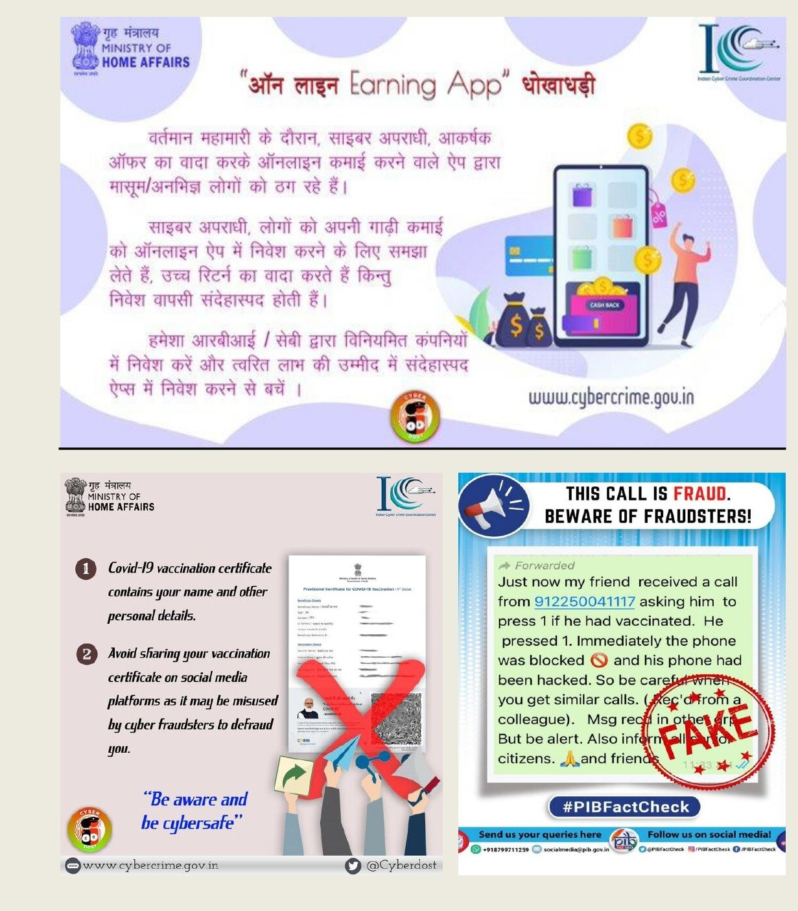
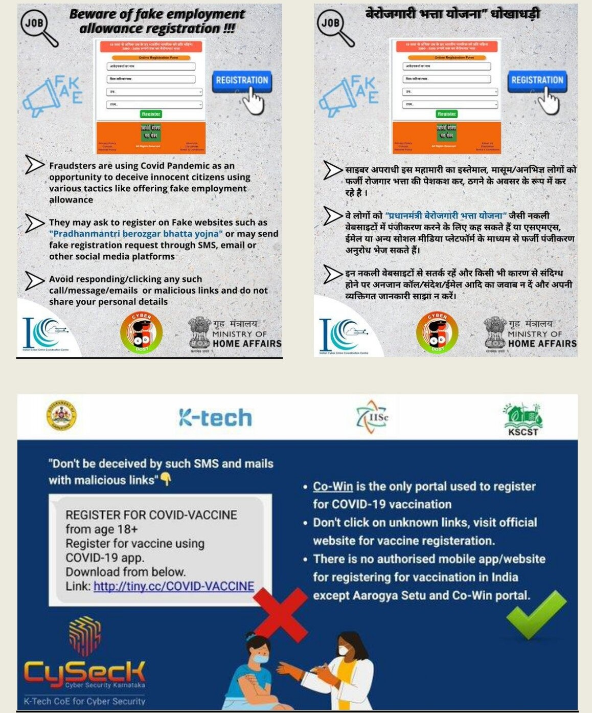
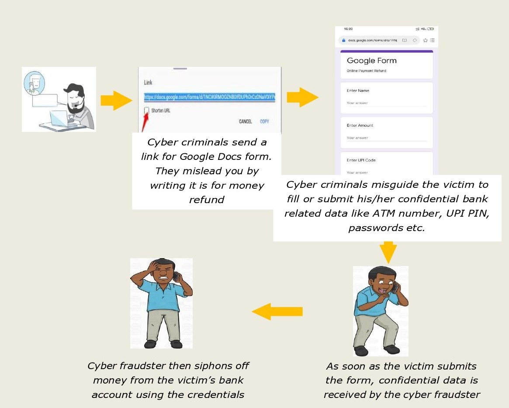
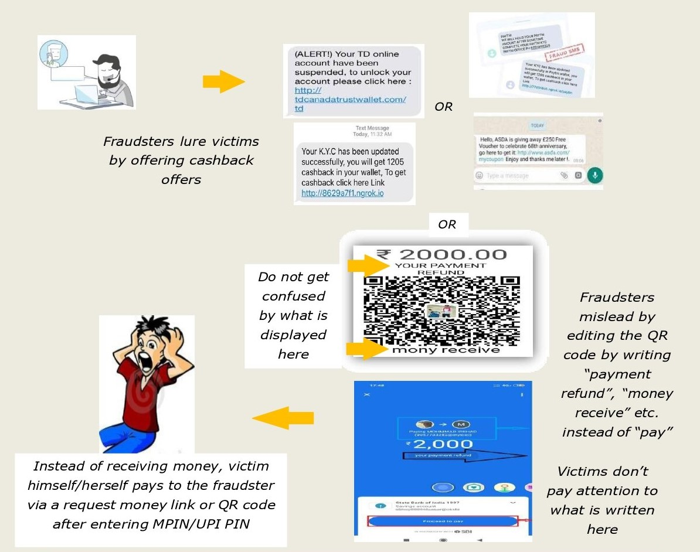
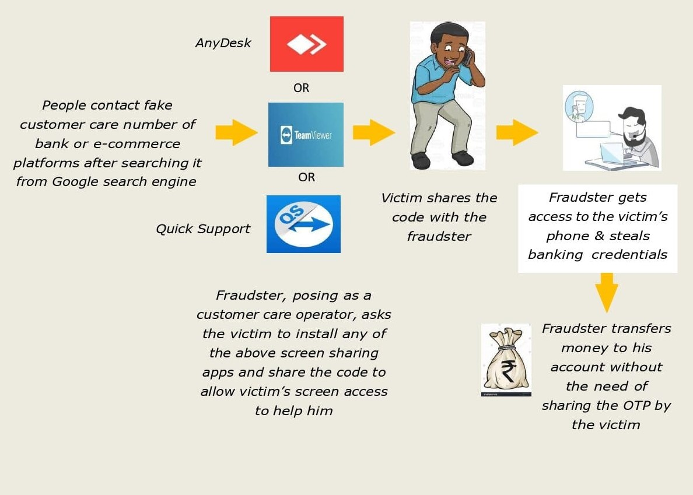
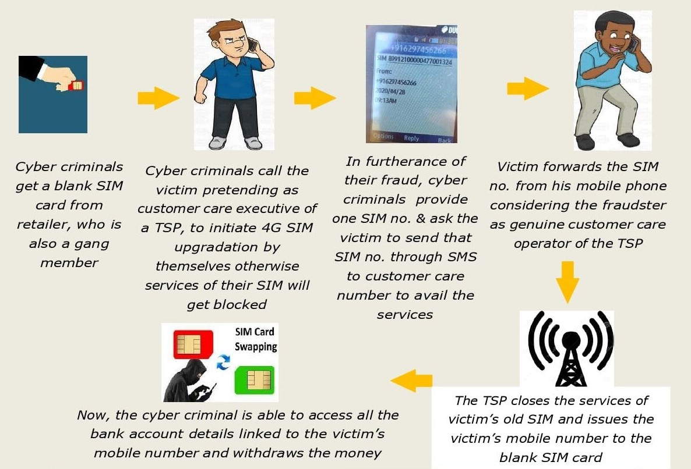

OTP SHARING FRAUD :
Cyber criminals posing themselves as bank /RBI officials call people and tell them that
their ATM card has been blocked or their KYC (Know Your Customer) is not updated
or their Aadhaar is not linked to their bank account & hence their account will be
blocked. Then on the pretext of updating the KYC/linking bank account to Aadhaar or
for resuming the services of ATM card/activation of new ATM card asks for details
related to victim‟s bank account like ATM card number, CVV number, OTP etc. After
these details are shared by victim, money is siphoned off from the victim‟s bank
account.

precautions
- Remember bank never asks for card number/CVV number/OTP.
- Never share the ATM card number, CVV, OTP or any other confidential banking
credentials with anyone over a phone call/SMS/WhatsApp.
- E-mail should not be shared as this may lead to activation of Internet banking by
cyber criminals, leading to siphoning off of one‟s money.
UPI PHISHING FRAUD :
On the pretext of helping in banking related issues, fraudsters ask victims to forward an
alphanumeric link to a particular number (depending upon the bank associated with the
victim) from their registered mobile number. Once it is done, cyber criminals install the
UPI wallet of the victim (using Wi-Fi) bypassing the SIM binding process onto their own
mobile phone, thus gaining access to the victim‟s bank accounts linked to the registered
mobile number.

precautions
- Never share any OTP or link to any number given by someone calling oneself as
bank /RBI officials.
- calling to customer care number of airlines/e-commerce entities obtained
from Google search for rescheduling flights/getting refunds etc. have become
victims of such frauds following their instructions. Never do that.
FRAUD BY REQUEST MONEY QR CODE/LINK ON GOOGLE
PAY/PHONEPE/PAYTM :
Cyber fraudsters send debit links or QR codes to victims to scan and receive money in
their bank accounts through Google Pay/PhonePe/Paytm. But instead of receiving money,
it actually gets debited from the victim‟s account as fraudsters actually send a request
money QR code/link.

precautions
- Never accept/click on any link or scan any QR code from unverified sources as
they may send you a manipulated one.
- For receiving money, there is no need to enter MPIN or UPI PIN.
FRAUD DURING COVID-19 PANDEMIC :


FRAUD USING GOOGLE DOCS APP :
Apps for online forms like Google Docs etc. are widely used to collect data. Fraudsters take
advantage of such applications and misguide the victim to fill or submit his/her confidential
bank related data like ATM number, UPI PIN, password etc. As soon as they fill up the
form and submit their data, it is directly transferred to the creator of the form.

precautions
- You are advised to never share confidential banking details in online forms like
Google Docs.
- Bank never asks their customers to fill such forms.
FRAUD USING OLX/E-COMMERCE PLATFORMS :
Cyber fraudster uses the e-commerce platforms like Olx/Quikr/Facebook for giving fake
advertisements to sell commodity at lucrative prices. When someone intends to buy, cyber
fraudster asks for advance payment in the form of packaging/transportation/registration
charges etc. Buyer pays the money believing him/her to be a real seller and the fraudster
disappears with the money. Frauds are also committed by cyber criminals posing
themselves as buyers to real sellers. In this modus operandi, cyber criminals get the
seller‟s account debited on the pretext of paying advance money by sending request
money link/QR code instead of the credit link/QR code

precautions
- Never pay advance money without seeing the article physically and meeting the
seller in person.
- For receiving any type of payment via link or QR code, there is no need to enter
MPIN or UPI PIN.
- Always remember entering MPIN or UPI PIN is required only for paying money.
FRAUD THROUGH FAKE CASHBACK OFFERS :
Fraudsters lure victims by offering cashback offers from PhonePe/Google Pay etc. and
request the victims to click on a request money link or scan a QR code to avail the same.
Once the link is clicked or QR code is scanned, money is debited from the victim‟s bank
account instead of being credited as he enters MPIN or UPI PIN. Link can be of type
http://8629a7f1.ngrok.io or SMS 1533c608933b85f448a7428b4365a042ae6

precautions
- Never forward /click on any suspicious link from unverified sources.
- Remember the thumb rule: You need to enter MPIN or UPI PIN only for debiting
money from your account; it is never required for receiving money.
FRAUD USING SCREEN SHARING APPS :
Cyber fraudsters on the pretext of aiding or citing the policy of a company guide the
victim to install screen sharing apps like Quick Support/TeamViewer/AnyDesk etc. and
thus get control of the victim‟s phone, thereby getting access to banking credentials like
OTP/MPIN/username/password for internet banking etc. The fraudster then siphons off
money from the victim‟s account using those credentials. By the time the victim realizes
it, a lot of money is already siphoned off.

precautions
- Never install any screen sharing app when asked to do so over a phone call by
customer care/help desk representative of any entity.
- Banks/E-commerce entities etc. never ask to install third party application for
screen sharing.
SIM CARD SWAPPING FRAUD :
It is a type of identity theft where cyber criminals manage to get a new SIM card issued
for your registered mobile number through the Telecom Service Provider. With the help
of the new SIM card, fraudsters get OTP & other confidential details required for
financial transaction from your bank account.

precautions
- Never share any information related to your account and SIM over a phone call.
The 20-digit SIM number mentioned on the back of the SIM is a very sensitive
data.
- If your mobile number is inactive/out of range for a few hours, enquire from your
mobile operator immediately.
- Register for regular SMS as well as e-mail alerts for your banking transactions
(this way, even if your SIM is de-activated, you shall continue to receive the alerts
via your email).
FRAUD USING FAKE SOCIAL MEDIA ACCOUNT
Fraudsters target accounts on popular social media platforms like Facebook and
Instagram. They commit fraud by creating a similar fake account of the target profile and
requesting his/her friends for instant money transfer citing some medical emergency etc.
Target profile‟s friends transfer the money considering him/her as his/her friend. By the
time the target profile comes to know of it, many of his friends become victims of the
fraud. Similar fraud is also committed by hacking the target account.

precautions
- Keep the privacy setting as “My friends” only.
- Before transferring the money requested via Facebook, WhatsApp or other social
media account, verify the authenticity of the message by meeting the concerned
person or calling him.
- Turn on 2-step verification for all your social media accounts.
- Keep your password strong and maintain the privacy of the password.
SEXTORTION ON FACEBOOK
Live video chat is done on Facebook via Messenger by cyber criminals posing as female.
Cyber criminals convince the victim for video call in compromising positions, following
which fraudsters take screenshots of the same or do screen recording of the video call.
Cyber criminals then threaten the victim to circulate the photographs/videos in
compromising positions on various online platforms, if the demanded money is not paid.
precautions
- Avoid friendship with unknown people on social media platforms.
- Never make video calls to unknown people on Facebook or any other social media
platform.
HARASSMENT THROUGH FAKE SOCIAL
MEDIA PROFILES
Cyber criminals morph the photographs of the victim which they get from social media
and upload it on social media platforms. After that they demand money to remove the
morphed pictures from social media. Victim falls prey to the trap and transfers the
money.

precautions
- Social media sites offer privacy settings to manage who can view your posts,
photos, or send you friend request etc. Restrict access to your profile.
- Ensure your personal information, photos and videos are accessible only to your
friends.
- Refrain from making friendship with unknown persons over social media
platforms.
CYBER BULLYING ON SOCIAL MEDIA
Cyber bullying is bullying with the use of digital technologies. It can take place on social
media, messaging platforms, gaming platforms etc. It is a sort of repeated behaviour, aimed
. at scaring, angering or shaming those who are targeted. Examples include: spreading lies
about or posting embarrassing photos of someone on social media, sending hurtful
messages or threats via messaging platforms, impersonating someone and sending mean
messages to others on his/her behalf.

precautions
- Learn about the privacy settings of the social media apps being used by you.
- Ensure your personal information, photos and videos are accessible only to your
trusted ones.
- Think twice before posting or sharing anything online – it may stay online forever
and could be used to harm you later.
- Make your children aware that cyber bullying is a punishable crime so that neither
do they indulge in cyber bullying nor do they let anyone bully them.
- Report hurtful comments, messages and photos and request to the concerned
Social Media Platforms to remove them. Besides „unfriending‟, you can
completely block people to stop them from seeing your profile or contacting you.
CYBER STALKING
Cyber stalking is online stalking. It involves the repeated use of the internet or other
electronic means to harass, intimidate or frighten a person or group. Common
characteristics of cyber stalking may include false accusations or posting derogatory
statements, monitoring someone‟s online activity or physical location. Cyber stalkers
may use email, instant messages, phone calls, and other communication modes to stalk
you. Cyber stalking can take the form of sexual harassment, inappropriate contact or an
unwelcome attention in your life and your family‟s activities.

precautions
- Be careful while uploading your personal information, photos and videos on
social media. Ensure that these are accessible only to your trusted ones.
- Never add unknown people to your friend list.
- Review all the privacy and security settings of social media and restrict them to
“my friends only‟‟.
ATM/DEBIT CARD CLONING FRAUD
Each ATM/debit card has a magnetic strip in it containing confidential data. Cyber
criminals use a skimmer machine to read this strip and capture the confidential data related
to the card. Then they copy the data onto a blank card, which is used for fraudulent
transactions. They use overlay devices/pin-hole camera/ spy camera or peep from behind
in the queue to read ATM/Debit card PIN while it is being entered by the user on the ATM
keypad/POS machines.
precautions
- Enter the PIN yourself taking due care to hide the PIN (as in image 1).
- Check for hidden cameras/skimmer devices while withdrawing cash (as in image
2).
- Physically check the keypad to ensure it does not have an overlay device.
- Do not allow anyone to stand beside or behind you while carrying out transaction
with ATM/Debit card/Credit card.
- Do not keep a PIN which can be guessed easily. Keep changing your PIN.
- Ensure you get transaction receipt or confirmation through SMS.
- Ensure that any part of the ATM machine is open or loosely attached.
EDITED GOOGLE CUSTOMER CARE NUMBER FRAUD
Cyber fraudsters edit the customer care number of banks/airlines/food outlets/e-
commerce entities etc. on Google page and customize it in such a manner that whenever
someone searches on Google for the customer care number, the edited number of cyber
criminals appears on top of the search results for that entity. Victim ends up calling the
fraudsters instead of the real helpline numbers. The fraudsters portraying themselves as
helpers actually give instructions to dupe the caller victim.

precautions
- Always search for customer care number from the official website of the
banks/airlines/food or retail outlets/other e-commerce entity and not by searching
the entity name on Google search.
- Toll free number for any bank is given on back/flip side of debit/credit card. Call
on the given numbers only.
- Always remember that Google does not give verified information on searches.
RANSOMWARE ATTACKS
Ransomware is a category of malicious software which, when run, disables the
functionality of a computer in some way. The ransomware program displays a message
that demands payment to restore functionality. The malware, in effect, holds the computer
system to ransom. In other words, ransomware is an extortion racket. Ransomware
typically spreads through phishing emails or by unknowingly visiting an infected website.

precautions
- Do not open emails from unknown sources containing suspicious attachment or
phishing links.
- Keep your antivirus up-to-date and windows firewall turned on and properly
configured.
- Back up your most important files on a regular basis. Keep the important data on a
separate hard disk.
- Have proper spam filters enabled in your e-mail account.
JUICE JACKING
Juice jacking is a kind of cyber fraud where data is copied from a smart phone, tablet or
other electronic devices using a USB charging port that is actually used for both data
connection and charging. The victim believes it to be a charging port only.
precautions
- Disable data transfer on your phone while charging.
- Switch off your device before charging in public places.
- Carry your own portable power pack/bank.
- Can buy a data disabled charging cable.
LOTTERY FRAUD/NIGERIAN FRAUD
Cyber fraudsters send e-mails/SMSs informing the recipient (victim) that he/she has won
a lottery/prize worth millions of rupees/dollars and the recipient only needs to click on
the link sent on their e-mail/mobile phone or to tell how they want to receive the prize
money. However, on responding positively, the recipient is asked to pay money in the
name of registration/shipment/service charges, GST etc. one after the other for releasing
the prize money. This way the recipient keeps on paying the fraudsters until he/she
realizes the fraud. The fraudsters were initially mainly from Nigeria and hence the
terminology.
precautions
- Never respond to calls/SMSs/e-mails related to winning a lottery/prize or seeking
personal or financial details.
- Have proper spam filters in your email account to stop receiving unsolicited
emails.
- Follow the thumb rule: Never transfer funds to unknown persons or entities in
promise of higher returns/winning prizes or lottery.
ONLINE JOB FRAUD
Cyber criminals advertise fake job offers using various platforms either online via fake
websites. Victim, in search of a job, goes through these fake job offers and contacts the
cyber criminal. Upon contacting cyber criminals, victim is asked to pay registration fee
or make an advance payment (which they claim is refundable) to avail their services for
getting a job. Victim transfers the money and follows the guidelines of the fraudster for
getting a job and falls prey to the cyber crime. In some cases, a fake website phishes
financial data through a fake payment channel.

precautions
- To avoid such frauds, it is necessary to submit your application to a registered
website only.
- Do not make any advance payments for getting a job.
COMPUTER OR DEVICE HACKING
Hacking is the act of gaining access to a computer/device without legal authorisation.
Cyber criminal uses various methods for hacking a victim‟s computer/device such as
infecting a computer/device by a virus or malware. Hacking may lead to data
corruption/deletion or data loss or stealing of data.
precautions
- Computers/laptops should have a firewall and antivirus installed, enabled and
updated with latest versions.
- Never download or install pirated software, applications etc. on your computer,
laptops or hand- held devices.
- Always scan external devices for viruses, while connecting to the computer.
- Be careful while browsing through a public Wi-Fi and avoid logging in to personal
and professional accounts while using public Wi-Fi systems.
MOBILE APPLICATIONS FRAUD
Mobile applications may be mediums of cyber-attacks, stealing of confidential data or
mode of getting access to the controls of your phone/device. People download mobile
applications from unknown sources ignoring security warnings. These applications may
have viruses which pass sensitive information or give control of your phone/device to
some outside agent, who gets access to your contacts, passwords, financial data etc.
Several mobile applications from unknown sources ask for unnecessary permissions for
access to your phone/device, which one grants without due diligence. Thus, these mobile
applications can access a huge amount of personal information, photographs etc. from
your phone/device.

precautions
- Always install applications from trusted sources like for Android devices, use
Google Play, for Apple devices use App Store. Please ensure that the app is
having Play Protect shield.
- It is also important to read reviews about the app. If it has a negative review, read
more to see if anybody noted any security concerns like bugs or unencrypted
passwords.
- Update your software and mobile applications on a regular basis so that you don‟t
miss on important security patches.
- Be careful while granting app permissions like a document scanning app does not
require permission to access your location, call logs etc. Sometimes applications
are filled with spyware and other types of malware.